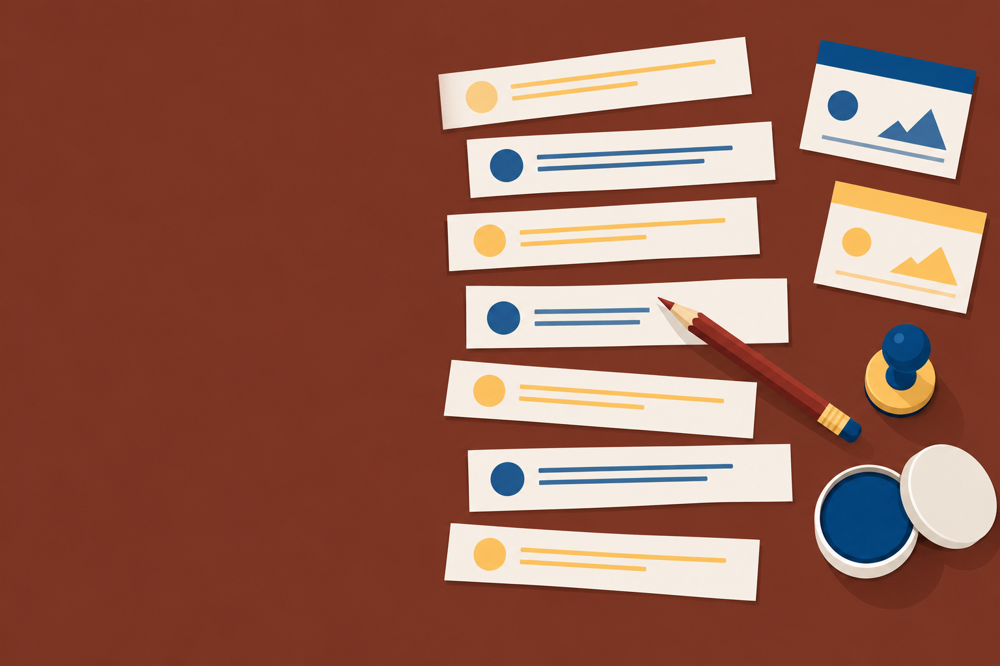

Chapter 3 · 55 minutes
Research, Creative Work, and Responsible Use
The tool answers in seconds. What makes the work yours to defend?

The tool answers in seconds. What makes the work yours to defend?
a chat assistant to build a research brief, and check every lead it gives you against a primary source
a claim that content is AI-made by judging which evidence (process records, disclosure, content credentials, detector scores) can support it, and decide what a disclosure must say
the five ethical use principles to a task, and write the disclosure statement and privacy check that go with it
Leadthe county health department probably publishes heat data
Factthe county reported this number in this report
What do you need next?
Gives: a list of pages that match your words
You still: pick the pages, judge who wrote them, read them
Gives: a written answer with no guaranteed source
You still: treat every claim as a lead and find its source
Gives: a written answer with citations you can open
You still: open each citation and confirm it says what the answer claims
A link shown in a chat is still a lead. Open it.
A neighborhood nonprofit in Phoenix wants to write a one-page handout on how summer heat affects people who work outdoors. I am doing the research.
Step 2: ask for leads you can check, not for answersGive me five leads I can check: for each, name the kind of organization likely to publish reliable information and what I should search for on its site.
Step 3: forbid the thing you could not trust anywayDo not give me any statistics.
Step 4: set a shape you can work through one line at a timeOne line per lead.
Send it without the Step tags. They are for you, not the model.
Record every check: lead, page, publisher, date, held. That is your research brief.
Our new online sign-up has registered 214 families in its first month and cut Saturday pickup waits from 40 to 25 minutes. It's English-only for now, so Spanish and Vietnamese readers still need table help; reminder texts arrive in November.
Added to the promptThe summary must keep the caveat that the registration count is undercounted because the form is only in English. If you cannot fit every number, drop a number, never the caveat.
The new online sign-up cut Saturday waits from 40 to 25 minutes. Registrations (214) are undercounted because the form is English-only, so Spanish and Vietnamese speakers still need table help.
Still count: 30 words against “under 30.” One over.
A manager asks for a two-sentence summary of a safety bulletin that ends with "These steps do not apply to units built before 2010." Write the one sentence you would add to the prompt, and explain what it prevents.
I volunteer for a neighborhood nonprofit that runs a free bike repair clinic in a church parking lot.
Step 2: name the job, the length, and the readerWrite a 120-word blurb for the community events page. Audience: neighbors who ride to work or school and cannot afford a repair shop.
Step 3: hand over every fact, and forbid the restFacts to use: every Saturday, 8 a.m. to 11 a.m.; volunteers fix flats, brakes, and chains; parts are free while supplies last; no appointment needed. Do not invent any other facts, names, or numbers.
Step 4: set the voicePlain, friendly tone, no exclamation points.
Free Bike Repair Clinic, Every Saturday
If your bike gets you to work or school, but a repair shop isn't in the budget, we can help. Every Saturday from 8 a.m. to 11 a.m., our volunteers run a free bike repair clinic in the church parking lot.
Bring your bike and we will fix flats, brakes, and chains. Parts are free while supplies last. You don't need an appointment, so just roll in whenever it suits you during clinic hours.
Our neighborhood nonprofit believes everyone deserves a reliable ride. Stop by, say hello, and get back on the road with a bike that works the way it should.
Image promptA flat illustration of two volunteers fixing a bicycle in a sunny church parking lot, warm desert colors, no text, no logos, no recognizable faces.
deepfake Synthetic media of real people doing what they never did.
A tool returns a blurb that says "(Word count: 150)." Describe the one check you run before you trust that line, and what you do if it fails.
1898 · The Modern Bicycle and Its Accessories · a person wrote it
Every one actively interested in the subject of tires will readily admit that the puncture proof tire is the tire of the future. [...]
Section 3.2 · the bike clinic blurb · a chat assistant wrote it
[...] Our neighborhood nonprofit believes everyone deserves a reliable ride. Stop by, say hello, and get back on the road [...]
“Polished, generic closing and framing.” It quotes the two lines the tool added, and faults names the prompt forbade.
Samples, October 2026. Both verdicts rest on style, and style is a guess.
Stanford, 2023 · seven detectors
More than half flagged as AI-generated.
European team, 2023 · 14 tools
“neither accurate nor reliable”
A false positive is a person accused of something they did not do.
An instructor's detector flags a student essay as 85 percent likely AI-generated. Using the 2023 studies, explain two reasons that score is not proof, and name the evidence you would ask the student for instead.
Who owns it? With current technology, prompts alone do not make you the author (US Copyright Office guidance, January 2025).
[...] we used an AI chat assistant to help brainstorm possible names and to write a first draft of the menu description. [...] The name was chosen by the owner. The description was rewritten in our own words, and every ingredient listed was checked against our actual recipe. What you read here, and what ends up in your taco, is what we make by hand in our kitchen.
Questions about ingredients or allergens? Ask us at the truck or get in touch through our contact page. [...]
Use two sentences and under 35 words. Say what the AI did, what I did, and what I checked. Do not claim anything I did not tell you.
I used an AI chat assistant to brainstorm names for this taco and draft its first menu description. I chose the name, rewrote the description myself, and checked every ingredient against my recipe.
Hi , this is the front desk. wants to move your follow-up for your to . Please call us back at or reply to this text. Your date of birth on file is , so let us know if that is wrong.
The desk pasted this to get the list. The check came after the leak.
A coworker wants to paste a client's angry email, including the client's name and account number, into a chat assistant to draft a calm reply. Apply the privacy check and list what goes in and what stays out.
Exit ticket: The tool answered in seconds. Name the three habits that make the work yours to defend.
Next: Chapter 4 takes the prompt itself apart.